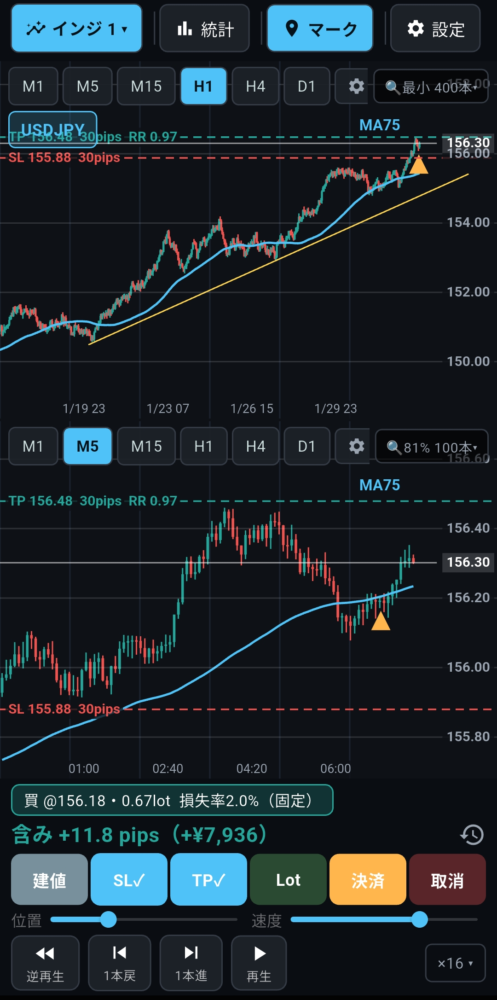

スマホでFX検証 › 読みもの
AndroidスマホでFXの過去検証（バックテスト）をするやり方
FXの過去検証は、PCの検証ソフトでじっくりやるもの、と思われがちです。けれど、机に向かう時間が取れずに止まってしまう人も多いはず。この記事では、Androidスマホだけで過去検証（バックテスト・リプレイ練習）を進めるやり方と、小さい画面でも検証を続けるための工夫をまとめます。
手順の説明には、筆者が個人で開発しているAndroidアプリ「スマホでFX検証」を使います。考え方そのものは、ほかの検証方法でも同じです。
1. スマホでやる過去検証とは
過去検証には、ルールをプログラムにして一気に計算させる「自動の検証」と、チャートを1本ずつ進めながら自分で判断する「手動の検証」があります。スマホに向いているのは手動の検証です。チャートを過去に戻し、先が見えない状態でローソク足を1本ずつ進めながら売買を重ねます（リプレイ練習とも呼ばれます）。
手動の検証は1回あたりの手間が小さいので、通勤中や休憩中の数分でも少しずつ進められます。「まとまった時間が取れないから検証できない」という悩みには、スマホのほうが合っていることがあります。
2. 用意するもの
- Androidスマホと、過去検証アプリ「スマホでFX検証」（ダウンロード無料）。
- 検証するルール：どこで入り、どこで損切り・利確するか、どんな時は見送るか。最初から完璧でなくてかまいません。
- ローソク足のデータ（CSV）：最初はアプリに入っている練習用のデモデータ（合成データ）で十分です。自分の相場で検証したくなったら、MT4・MT5から書き出したCSVを取り込みます（手順はMT4・MT5からCSVを書き出してスマホに取り込む手順）。
3. 進め方（5ステップ）
① 上位足と下位足を並べる
チャートは上段と下段の2画面です。たとえば上段に1時間足、下段に5分足を出して、上位足で流れを見ながら下位足でタイミングを取る、といったマルチタイムフレーム（MTF）の見方ができます。2つの画面は、右端の時刻がそろったまま動きます。

② 先を見ずに、1本ずつ進める
検証でいちばん大事なのは、答え（先の値動き）を見ないことです。アプリでは、今の位置より先のローソク足とインジケーターは表示されません。1本送り・自動再生・逆再生で、判断の瞬間を再現します。描いたラインに価格が届いたら再生を自動で止めることもできます。
③ 注文の前に、理由を記録する
入ると決めたら、注文の前に理由を残します。あとから書くと、結果を知ったうえで理由を作ってしまいがちだからです。アプリでは、自分で作ったチェック項目に答えてから発注します。あとから書き換えた理由は、エントリー時の理由と分けて表示されます。チェック項目やパターン名はすべて自分で作る仕組みなので、学んだ手法の言葉をそのまま使えます。
注文は成行・指値・逆指値に対応し、利確（TP）・損切り（SL）はラインをドラッグして置きます。スプレッドと手数料を銘柄ごとに設定すると、約定価格に反映されます。
④ 決済したら、答え合わせをする
決済したトレードを一覧から選ぶと、エントリーから決済までを1画面で見返せます。迷った場面は「注文時までやり直す」で注文の直前に戻り、同じ場面をもう一度試せます。損切りの理由や自己評価（ルールを守れたか）も、ここで残しておきます。
⑤ たまったら、数字で振り返る
勝率・プロフィットファクター・1回あたりの平均pips・平均リスクリワード・最大ドローダウンなどを、パターン別・損切りの理由別に集計します。件数が少ないうちの数字はあてにならないため、アプリでは件数が少ない間は「参考」「暫定」と表示し、数字を断定しません。まずは30件、できれば100件を目安に積み上げてみてください。
4. 小さい画面で続けるための工夫
「スマホの画面は狭くて検証しにくい」という声はよく聞きます。アプリでは、次のような形で指での操作を補っています。
- ボタンは親指が届く位置に：再生や描画のボタンはチャートのすぐ下にまとめています。
- 画面の高さを変えられる：上段・下段・オシレーターの境目をドラッグして、見やすい比率にできます。
- 指先まわりを拡大表示：線を動かしている間は、もう一方の画面に指の下のチャートを大きく映します。
- 線の「固定」：スクロールや拡大の最中に、引いた線をうっかり動かしてしまうのを防げます。
- 1回を短く：1日5件でも、毎日続けば1か月で100件を超えます。スマホの利点は、スキマ時間に少しずつ進められることです。
5. PCとの使い分け
スマホとPCは、どちらかを選ぶものではありません。たとえば次のように使い分けられます。
- PC：CSVの書き出し、何枚ものチャートを並べた細かい分析、ルールの見直し。
- スマホ：決めたルールでの検証を、スキマ時間に1件ずつ積み上げる。理由と結果の記録。
CSVを書き出すときだけPCを使えば、取り込んだ後の検証・記録・集計はスマホで完結します。記録はスマホの中に保存され、インストール後はオフラインでも使えます。
6. 注意してほしいこと
過去検証の結果は、あくまで過去のデータでの結果です。同じ結果が将来も出るとは限りません。検証は「自分のルールと自分の判断を知るための作業」として使い、実際のトレードの判断はご自身の責任で行ってください。
検証を始める前に決めておくこと（ルール・範囲・記録する項目）や、続けるためのコツは、noteの記事「スマホでFXの過去検証をする手順と、続けるためのコツ」にくわしく書いています。